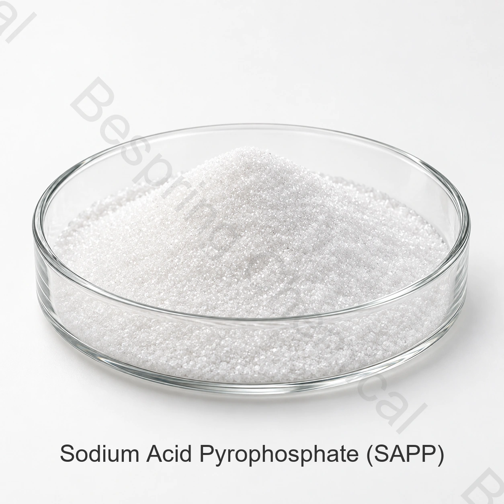

Разрыхление и буферизация
JECFA признает SAPP в качестве кислотного разрыхляющего компонента и буфера. В хлебопекарных системах он обеспечивает контролируемую кислотность для реакции с бикарбонатом натрия.
Фосфат пищевого качества · Дифосфат натрия · INS 450(i)
Кислый пирофосфат натрия представляет собой кислый дифосфат натрия, используемый в качестве кислотного разрыхляющего компонента, буфера и секвестра в выбранных хлебобулочных, заквасочных и мясных системах.

Изображение продукта · уточните марку и упаковку при заказе
Кратко о продукте
Содержание основного вещества≥95.0%
Стандартная упаковкаМешок весом 25 кг
Загрузка контейнера24 МТ/20' FCL
КвалификацияCOA и сертификаты по запросу
Пищевой сорт пирофосфата натриевой кислоты (SAPP), также называемый дигидропирофосфатом динатрия, представляет собой INS 450(i), CAS 7758-16-9 и формулу Na2H2P2O7.
Коммерческие показатели, требования стандарта и результаты партии оценивают отдельно. Использование, дозировка и маркировка зависят от пищевого продукта и рынка.
Функциональные роли
Скорость реакции, нейтрализующая способность, размер частиц и полная рецептура определяют поведение разрыхляющей системы.
JECFA признает SAPP в качестве кислотного разрыхляющего компонента и буфера. В хлебопекарных системах он обеспечивает контролируемую кислотность для реакции с бикарбонатом натрия.
JECFA также перечисляет секвестрацию. При применении в фосфатных смесях для мясных продуктов оценивают весь состав, pH, текстуру и разрешённые условия использования.
Области применения
Правовые разрешения, уровни использования и требования к скорости реакции варьируются в зависимости от продукта и целевого рынка.
Используется в качестве кислотного компонента подкисления с бикарбонатом натрия в квалифицированных хлебных, кондитерских и хлебобулочных составах.
Оцените скорость реакции, выброс газа, обработку теста, структуру мякиша, цвет и вкус готового продукта.
Может быть объединен с другими разрешёнными кислотами для разрыхления для достижения требуемого профиля обработки и выпечки.
Оцените удержание воды, выход готового продукта, текстуру и вкус в фактической мясной и фосфатной системе.
Оценка совместимости фосфатов, управления влажностью и стабильности в коммерческих тепловых условиях.
Контроль pH, ионная прочность, время реакции и общее использование фосфатов в разрешенных смесях.
Коммерческие справочные показатели
Приведены коммерческие справочные показатели, а не результаты анализа партии. Согласуйте договорные пределы, аналитический базис и методы испытаний.
Прокрутите таблицу или используйте клавиатуру для просмотра всех столбцов
| Показатель | Единица | Спецификация |
|---|---|---|
| Содержание пирофосфата натриевой кислоты | % | ≥95.0 |
| Внешний вид | — | Белый порошок |
| Нерастворимые в воде вещества | % | ≤1.0 |
| Мышьяк (As) | мг/кг | ≤3 |
| Потери при высушивании | % | ≤0.5 |
| Кадмий (Cd) | мг/кг | ≤1 |
| Свинец (Pb) | мг/кг | ≤4 |
| Ртуть (Hg) | мг/кг | ≤1 |
| Тяжёлые металлы (в пересчёте на Pb) | мг/кг | ≤15 |
| Фтор (F) | мг/кг | ≤10 |
| pH, 1% водный раствор | — | 3.5–4.5 |
Сравнение спецификаций: Коммерческий pH 3.5–4.5 для 1% водного раствора отличается от диапазона 3.7–5.0 (раствор 1:100) в монографии JECFA. Согласуйте приготовление раствора, температуру, метод и требуемый предел. Скорость реакции и нейтрализующая способность — разные показатели; их задают отдельно для выбранной марки и рецептуры.
Поддержка квалификации
Запросить текущую спецификацию/TDS, SDS, методы испытаний и типовой или COA на партию.
Запросить применимые документы HACCP, Kosher, Halal и ISO; проверить продукт, производственную площадку, область действия и действительность.
Официальный источник: Монография ФАО/ВОЗ JECFA натриевой кислоты пирофосфат. Условия применения определяются конкретным продуктом и рынком.
Хранение и обращение
Вопросы покупателя
SAPP используется в качестве кислотного разрыхляющего компонента, буфера и секвестра, особенно в квалифицированных хлебопекарных системах разрыхления.В фосфатных смесях для мясных продуктов его пригодность оценивают по полной рецептуре и требованиям рынка.
SAPP является кислым пирофосфатом дисодия, INS 450(i), с формулой Na2H2P2O7TSPP - щелочный тетранатриевый пирофосфат, INS 450(iii).
Коммерческая спецификация указывает не менее 95,0%. Подтвердить согласованную спецификацию и COA на партию.
Укажите скорость реакции в тесте, нейтрализующую способность, размер частиц, целевой продукт и состав разрыхляющей системы.
Ссылка составляет 25 кг в мешке, 24 метрических тонны на 20-футовый контейнер и минимальный заказ 500 кг.
Связанные пищевые фосфаты
Сравните идентичность, спецификацию и назначение этой отдельной фосфатной соли.
Сравните идентичность, спецификацию и назначение этой отдельной фосфатной соли.
Сравните идентичность, спецификацию и назначение этой отдельной фосфатной соли.
Поставка по согласованной спецификации
Укажите применение, спецификацию, количество, упаковку, место назначения и необходимые документы.
Укажите марку и рынок назначения, чтобы уточнить доступность документов для вашего заказа.
Внешний источник не заменяет сертификат партии или спецификацию Bespring.